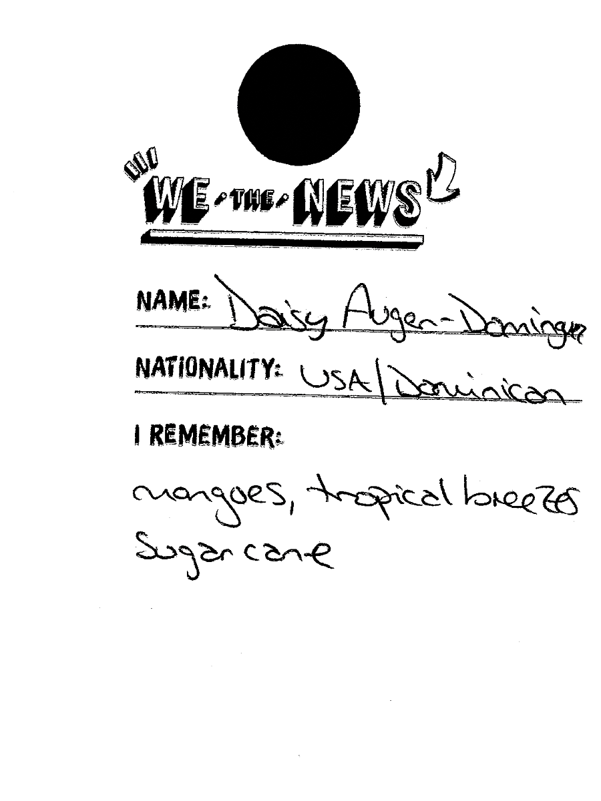
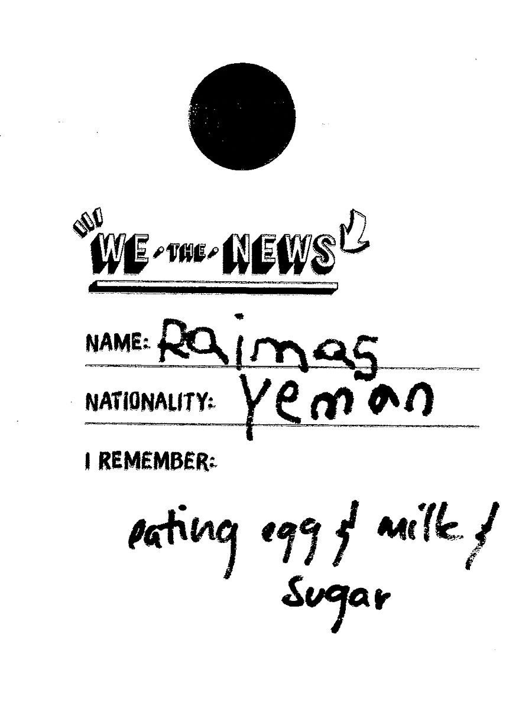
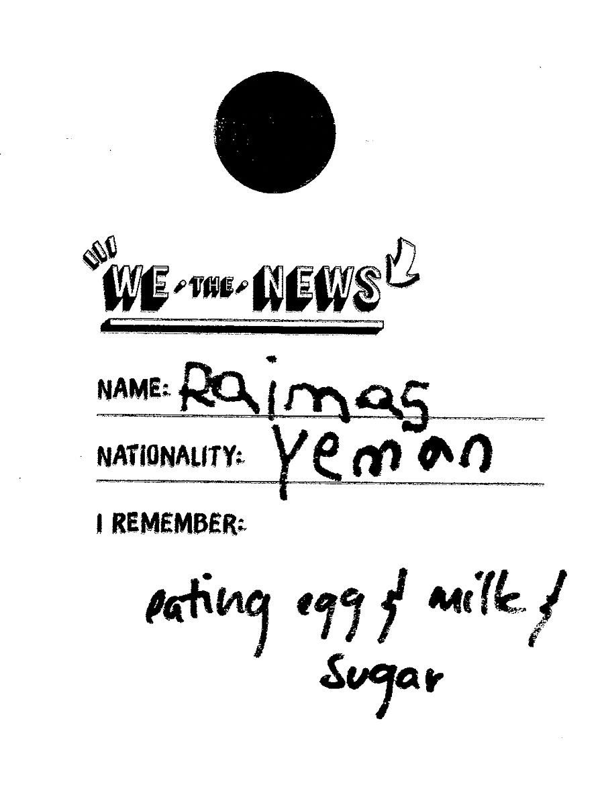
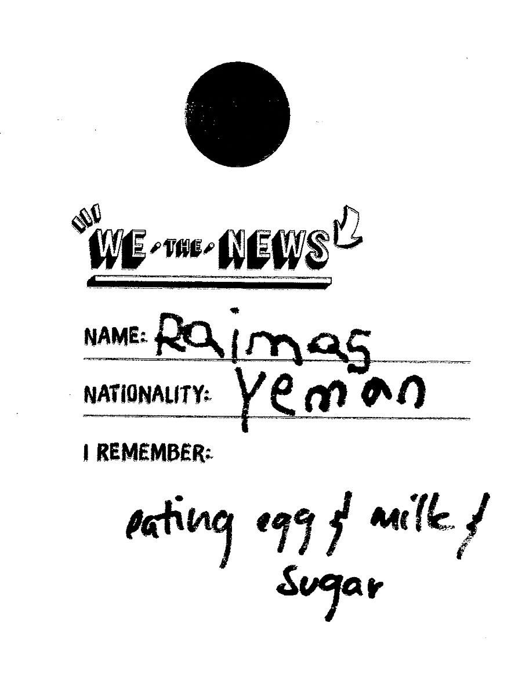

How did We the News come about?
Kimi Hanauer
K.H.
Lizania Cruz
L.C.
We the News is a project I started last summer [in 2017]. I wanted to find a means to document the ways in which immigrants belong to communities and their resilience. I was also very interested in capturing the varied experiences and the struggles of immigrants, but considering how these elements of immigrant stories could empower and unite others to speak up. Often times the immigrant narrative that we are told is tied to conversations around assimilation. We hear “assimilate, assimilate, assimilate,” and I think we need to change that narrative and be individuals within our communities who work to empower one another. It’s not necessarily about assimilation, but really about encouraging and discussing this transatlantic identity and what that means. At the beginning of this project, I talked with some organizations about partnering with me on the project. Through conversation, I came across the Black Alliance for Just Immigration (BAJI). I think getting to know about them really transformed not only me, but the project as well. I didn't know the history of the organization, but what compelled me specifically is that they were working with Black immigrants and dialoguing about the intersections of Black American narratives and Black immigrant communities.
For me, I started thinking about race when I moved to the United States and this project also became the outlet through which I began to explore my own identity.
I collaborated very closely with BAJI’s NYC organizer, Albert Saint Jean. He brought a community organizing perspective to the project. As artists, it is great to collaborate with an organizer; the more I see it, the more I realize that they are the most talented people in the world in the way that they are able to galvanize and form community. They are undervalued.
We The News, 2017, Photographs by Yeji Jung.
We started with a series of story circles and each one opened with a prompt. Currently, I’m transcribing the conversations from these story circles into individual zines. I also started exploring this idea of story maps where people could trace their migration route and add a written memory on a card to the map. It is important to acknowledge, honor, and share our experience as a community in order to reclaim our history.
During the memory maps, I was interested in the ways that we shape identity and memory from a transnational perspective. So far, the map has been installed in two spaces: at a street festival in Bed-Stuy and at an art exhibition at the BronxArtSpace. It was interesting to see how the context of the space shaped the conversations.
How were the conversations different within those two contexts?
During the festival, people were engaging with each other. I think that is the nature of being in a public space. People were saying things like, “Oh! You are from Trinidad!” There were people from the Caribbean, Africa, Europe at the festival. In the Bronx the participants were mostly of Puerto Rican or Dominican descent.
Also, in the gallery context (at the BronxArtSpace), people were afraid to touch the map. They had to see others getting involved in order to engage. There, the conversations were more about the work in relation to the space and the other work exhibiting, verses about the community and engaging with one another.
Something that stuck out to me about the memory cards was that people were identifying themselves through their own experiences. When you are dealing with immigration and the bureaucracy that defines it, there are situations where you become categorized in specific ways. So that is something that feels very powerful to me about this project.
Overall, the project works to create a framework for people to shape their own narratives. Not necessarily in the place of “I identify as X, Y, Z.” There is already a lot of baggage in those categories, so instead, it is more about “This is what happened to me, this is what I experienced, what I felt, this is what I ate.” I am interested in creating frameworks that allow for those types of conversations and self-definition through lived experiences and histories.
I feel like that overlaps with one of the ongoing conversations we have at Press Press: How do we identify who our people are in a way that is not defined by categorizations that have been imposed on us? Is it shared experience? Is it an ethos or politics? Whatever we choose that “thing” to be. What do you think is the difference between defining yourself through your experience rather than a category?
We The News, 2017, Photograph by Yeji Jung.
I am personally trying to dispose of all of the different categorizations. Because of my background, because of my family and the people who raised me, I already have adopted those categorizations as normal, and I haven’t questioned them that often. It is the same process when you migrate to a new place—the people you relate to are already bringing a ton of biases to what those categorizations are.
I think there is a big push to categorize yourself within a specific group for people to understand you. If you don’t categorize yourself within a specific group or ideology, then you are considered a person without a strong identity. I was at a Tinashe Mushakavanhu lecture yesterday at Cooper Union and he was quoting Stuart Hall. I don’t have the exact quote now, but he was saying that identity is an evolution. So if you already identify as X, Y, Z, when does the process of re-identifying yourself happen?
Sometimes it feels like the pressure to be assigned to a group is all very connected to whiteness and control. It’s tied to the history of how whiteness in this country was formed: when European immigrants gave up their cultural identity to gain the power of whiteness. And this grouping of people according to a certain racial hierarchy was created. To me, it feels similar to the way creating “knowledge” can be a way of creating authority over something or someone. It gets convoluted because it can go the other way around too, in the sense that claiming a certain identity, or creating an intentional community or space, can also be powerful and radical actions.
Yeah, totally. Within that hierarchical structure, I have a hard time answering the question “How do I identify the past?” and a lot of times, that gets me into trouble. There are expectations set for us that we need to fulfill.
I had an experience when I was reading one of the zines from the story circles. In that story circle there was a conversation between a West African participant who doesn’t identify with the terms “illegal” or “undocumented” and here was a Ph.D. candidate at Berkeley who is looking at coining a new term, “illegalized,” to described undocumented folks. I was reading this story at a workshop that I participated in, and at the end, one of the participants, who was white, came up to me and said, “I haven’t been able to quite pinpoint why I didn’t sympathize with the immigrant narrative lately. But listening to the story of women in the story you read made me understand that she is just like me, trying to reclaim her terms.” For me, that was powerful because it shows that personal experiences allow for someone to see themselves in this complexity. But yeah, if you erase the idea of white supremacy, then you understand that we are all complex.
Thinking about how different systems that we exist within work: What are the hierarchies of those systems? How does white supremacy work in relation to immigration and how does that determine how people identify? I think it’s worth provoking. Why are white immigrants not typically seen as immigrants and part of the fight for equal rights?
I think it is tied to history. From the beginning of the 1900s, whiteness and white supremacy was inherently tied to the system of citizenship; there was prejudice—you were given citizenship if you appeared white, but not if you were a person of color. There is also the assumption that perhaps people of color, at the time, were not free. I am curious about this. What you pointed out is interesting; you pointed out that some people don’t identify with the categories. Typically, white immigrants are not part of the narrative. That comes from what the media portrays what an immigrant is. When we think of undocumented immigrants, the narrative often only includes people of color, even though there are white undocumented immigrants as well in the U.S.—but again, that is not the narrative. Looking at the Naturalization Act and researching on the history of this country, of course immigration is a racial issue, not just “immigration.”

We The News, 2017, Photographs by Yeji Jung.
I just started learning about Brown v. Board of Education. Twenty-five years before the rise of this case, there was another case—Gong Lum v. Rice in 1927—in which a Chinese family couldn't understand why their kids had to go to a school for colored people, even though they were business owners and legally in the country. They sued the school and lost. They didn’t identify as people of color; that is what I am interested in with my practice. This is something I had to grapple with and understand myself. When I moved to the states, I didn’t see myself within the binary race constructs, or maybe that’s the wrong word, but I didn’t see myself as Black. I was mulata. The more I live here, the more I see it and identify myself as a person of color and as part of the Black community. This has only happened because of my migration, among other things. There’s a lot that is part of history and part of not understanding the contextual knowledge. Something that came up in the story circles was that Black immigrants didn't want to see themselves as “African-Americans.” We had conversations around what that meant and where that sentiment comes from. I think it ties in with the issue of categorization and identifying yourself as only one specific identity. The people who shared this sentiment thought that their identities were way more complex and their Blackness wasn’t the only thing that defines them. There was this funny anecdote that one of the participants said, “I get my Black card taken away from me all the time.” She started talking about not knowing all the Black culture references and being judged because of that. She told me, “If I get asked if I am Black, I always say yes, because I am Haitian, but I didn't watch the shows, I don’t get the cultural references, but I definitely identify as Black.”
That describes how complex we are outside of those categorizations, and what we know as race is not a simple thing, but rather a large series of overlaps.
Exactly. It is race and culture with personal experiences—these are all things that shape our identity. It is challenging because language and narrative are so important, and we simplify language to instigate dialogue. We have to reshape language and narrative to allow for the complexity.
That’s something Kearra Amaya Gopee and I talked about too [page number], how cultural producers and artists are forced to essentialize their identity in order to make something people want to access or understand. These two things are counterintuitive.
That’s something Kearra and I often talk about as well. We were talking about different identities of social media, which is challenging due to capitalism. You either have to identify as an emerging artist, woman of color, immigrant, or a socially engaged artist. All the funding is based on the structure of the institution and it is a huge challenge. I get asked a lot, “What kind of practice do you have [as an artist]?” And I say, “Well, I’m trained as a designer and I started exploring creating different narratives through photography but I am not a photographer, and I am interested in other things.” But I can’t say I am a multidisciplinary artist—what does that mean anymore? In order to get funding though, you have to identify yourself.
What is the most meaningful work you are focusing on right now?
For me, right now, it is important to change the narrative, to change perception, which is a big task. I am trying to do that personally. How do I leave a room open to shifting my own identity? I want to create ways that people can also do that either consciously or subconsciously. I want to know how to facilitate spaces where people categorize others differently. I go back and forth between feeling like we have taken huge steps, and other times I feel we are going backwards. I was having this conversation with Neon Christina, who organizes the event RAGGA in NYC, about the immigrant narrative and Caribbean diaspora, and what that looks like for queer people. That is a completely different and layered experience. So for me, stepping away from the narrative that is prescribed in the media and prescribed to myself and letting myself evolve.

 

